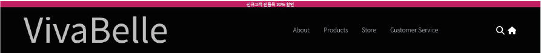

VIVABELL
5차 PROJECT
DETAILPAGE
VIVABELL

비바벨은 독창적이고 아방가르드한 감성을 담은 화장품 브랜드 웹사이트로, 개성 있는 색조 화장품을 선보이는 브랜드 정체성을 극대화하는 데 초점을 맞췄습니다. 기존의 전통적인 뷰티 웹사이트들과 차별화된 비주얼을 구축하며, 사용자의 브랜드 경험을 극대화할 수 있도록 UI/UX를 설계했습니다. 본 프로젝트에서는 강렬한 컬러 팔레트와 미니멀한 타이포그래피를 조화롭게 활용하여 브랜드의 독창성을 강조했으며, 정적인 페이지가 아닌 인터랙티브한 요소를 적용해 사용자 참여도를 높였습니다. 특히, 제품 설명이 고정된 상태에서 이미지가 변화하는 슬라이드 기능을 추가하여 제품 정보를 직관적으로 전달할 수 있도록 구현했습니다. 비바벨 웹사이트의 디자인과 코딩을 100% 직접 담당하며, 브랜드 아이덴티티를 유지하면서도 웹 퍼포먼스를 최적화하는 데 주력했습니다. 이를 통해 개성 있는 브랜드의 감성을 시각적으로 표현하는 동시에, 사용자 친화적인 인터페이스를 구축하는 것이 중요하다는 점을 배웠습니다. 앞으로는 보다 정교한 인터랙티브 디자인과 데이터 기반의 UI/UX 개선을 적용하여, 차별화된 사용자 경험을 제공하는 방향으로 나아가고자 합니다.
KeyWord
"독창성" (Originality)
비바벨은 기존의 화장품 브랜드들과 차별화된 독특한 디자인과 컨셉을 제공합니다. 이 키워드는 비바벨이 패셔너블하고 혁신적인 디자인으로 개성을 강조하며, 고객에게 새로운 경험을 제공한다는 점을 강조합니다. 독창성은 브랜드의 창의적인 접근 방식을 통해 고객들에게 신선하고 감동적인 미적 경험을 선사하는 핵심 가치입니다.
"예술" (Artistry)
비바벨의 제품은 단순한 화장품이 아니라, 예술적 가치가 담긴 작품으로 여겨집니다. 이 키워드는 비바벨이 디자인과 제품 모두에 세심한 예술적 감각을 반영하여, 고객들이 단순히 제품을 사용하는 것이 아니라, 시각적, 감성적 만족을 경험하게 된다는 점을 강조합니다. 예술적 요소는 브랜드의 혁신적이고 세련된 이미지와 맞물려 고급스럽고 특별한 느낌을 전달합니다.
"혁신" (Innovation)
비바벨은 기존의 화장품 시장에서 유행을 따르기보다, 새로운 트렌드를 만들어가는 혁신적인 브랜드입니다. 제품의 성분, 포장 디자인, 그리고 사용자 경험까지 혁신적인 접근을 통해 차별화를 꾀합니다. 이 키워드는 비바벨이 항상 발전하고, 변화하며, 고객의 기대를 뛰어넘는 창의적이고 혁신적인 제품을 출시하려는 노력을 나타냅니다.
"럭셔리" (Luxury)
비바벨은 고급스러움과 세련됨을 강조하는 브랜드입니다. 이 키워드는 브랜드가 제공하는 품질과 디자인의 수준을 나타내며, 제품을 사용하는 소비자들에게 고급스럽고 특별한 경험을 제공합니다. 또한, 럭셔리 키워드는 비바벨의 마케팅, 브랜드 이미지, 포장 디자인에서 반영되어, 소비자가 제품을 사용함으로써 느낄 수 있는 고급스러움과 우아함을 강조합니다.
비바벨(Vivabelle) 컨셉 상세 분석
타겟 (Target Audience)
개성을 중시하는 Z세대 & 밀레니얼 (20대 초반~30대 초반) 남들과 다른 것을 추구하며, 자신만의 개성을 뚜렷하게 표현하는 사람들 유행보다는 자신이 원하는 스타일을 중요하게 생각하는 소비층 SNS(인스타그램, 틱톡)에서 유니크한 메이크업 트렌드를 찾고 공유하는 문화에 익숙한 세대
크리에이티브 업계 종사자 & 아티스트
패션, 뷰티 크리에이터, 모델, 메이크업 아티스트, 디자이너 등 창조적인 직업을 가진 사람들 컬러 조합과 텍스처에 대한 감각이 뛰어나며, 메이크업을 아트의 한 형태로 여기는 고객층
성별에 구애받지 않는 뷰티 러버 (Genderless Beauty Enthusiasts)
젠더리스 뷰티 트렌드에 익숙하고, 성별에 관계없이 화장을 즐기는 사람들 남성 뷰티 인플루언서, 메이크업을 통해 자기 표현을 하는 사람들
럭셔리 & 하이엔드 브랜드를 선호하는 감각적인 소비층
가격보다 ‘브랜드 감성’과 ‘디자인’을 중요하게 생각하는 사람들 단순한 화장품이 아니라, ‘소장 가치’가 있는 제품을 구매하는 소비자 비바벨은 단순한 화장품 브랜드가 아닌, 메이크업을 통해 자기 자신을 표현하는 감각적인 소비자들을 위한 실험적이고 트렌디한 브랜드로 자리 잡는 것을 목표로 합니다. >
비바벨(Vivabelle) 타겟 상세 분석
컨셉 (Concept)
비바벨(Vivabelle)은 ‘독창적이고 아방가르드한 감각을 지닌 화장품 브랜드’로, 기존의 전형적인 뷰티 트렌드를 벗어나 개성 있고 실험적인 색조 메이크업을 선보이는 브랜드입니다.
Avant-garde & Edgy Beauty
비바벨은 샤넬과 다스코스메틱에서 영감을 받아 고급스럽지만 개성이 강한 감성을 반영합니다. 보라색·검정색 립스틱, 노란색·파란색 섀도우 등 강렬한 색감과 독특한 질감을 강조한 제품군을 제공합니다. 전형적인 ‘데일리 메이크업’이 아니라 아티스틱한 연출이 가능한
Experimental & Expressive Makeup
단순한 화장품이 아닌, ‘자기 표현의 도구’로 활용될 수 있는 브랜드입니다. 개성과 창의성을 중요하게 생각하는 고객층을 위해, 메이크업이 하나의 아트 퍼포먼스
Minimal yet Bold
브랜드 비주얼은 모던하고 미니멀하지만, 제품 자체는 대담한 컬러와 감각적인 텍스처를 강조합니다. 웹사이트와 패키지 디자인도 절제된 톤과 감각적인 UI/UX로 구성되며, 네비게이션 역시 시선을 사로잡는 방식으로 설계되었습니다. 블랙과 화이트의 심플한 컬러를 기반으로, 포인트 컬러(#f3591a, #5029c1)를 통해 브랜드 개
컬러 팔레트 및 디자인 요소
주 색상
#f3591a (강렬한 오렌지 톤)로 브랜드의 주요 색상으로 사용되어 강조됩니다. 이 색상은 혁신적이고 활기찬 이미지를 주며, 방문자에게 강한 인상을 남깁니다.
배경 색상
#dfdfdf (연한 회색)로 전체적인 레이아웃에서 배경을 부드럽게 처리하여 시각적인 편안함을 제공합니다.
네비게이션 바
기본 네비게이션 색상은 #5029c1 (보라색), 서브 메뉴 네비게이션 색상은 #f3591a로 설정하여 시각적으로 대비되는 색상을 사용하여 사용자 경험을 향상시켰습니다.
서브 메뉴
총 3개의 서브 메뉴가 있으며, 각 메뉴는 브랜드의 고유한 컨셉을 반영하여 색상이 다르게 설정되었습니다. 이를 통해 방문자는 각 서브 메뉴에서 제공하는 콘텐츠가 무엇인지 직관적으로 알 수 있습니다.
VIVABELL
상호작용하는 세련된 네비게이션"
스크롤에 따라 네비게이션 바와 로고가 동적으로 변화하며, 사용자가 페이지를 탐색하는 동안 직관적이고 세련된 경험을 제공합니다. 처음 웹페이지에 접속했을 때 깔끔하고 심플한 디자인을 유지하다가, 스크롤을 내리면 네비게이션과 로고가 자연스럽게 축소되어 더 세련된 인상을 주는 디자인입니다. 이러한 변화는 사이트의 고급스러움과 현대적인 매력을 강화하며, 사용자에게 매력적이고 현대적인 웹사이트 탐색 경험을 선사합니다.>

네비게이션 바:
기본 네비게이션 색상은 #5029c1 (보라색), 서브 메뉴 네비게이션 색상은 #f3591a로 설정하여 시각적으로 대비되는 색상을 사용하여 사용자 경험을 향상시켰습니다.
서브 메뉴:
총 3개의 서브 메뉴가 있으며, 각 메뉴는 브랜드의 고유한 컨셉을 반영하여 색상이 다르게 설정되었습니다. 이를 통해 방문자는 각 서브 메뉴에서 제공하는 콘텐츠가 무엇인지 직관적으로 알 수 있습니다.
VIVABELL

슬라이드:
image-container를 활용해 제품 이미지가 자동으로 슬라이드되며, 사용자가 손쉽게 다양한 제품을 볼 수 있도록 합니다. prev와 next 버튼을 사용하여 수동으로 이미지를 조정할 수도 있습니다. 이 슬라이드 기능은 제품의 변화와 변화를 보여주는 중요한 요소입니다. 반응형 디자인: indexDesk.css, indexTablet.css, indexMobile.css 파일을 사용하여 다양한 화면 크기에서 레이아웃이 적절히 변화하도록 설정하여, 어떤 기기에서도 사용자가 편리하게 웹사이트를 탐색할 수 있도록 합니다.
수동 슬라이드:
slider-container1에서는 제품 이미지가 좌우로 슬라이드되며, Next 버튼을 통해 사용자가 원하는 이미지를 직접 선택할 수 있게 했습니다. "NEW"라는 텍스트로 새로운 화장품 제품을 강조하며, 사용자의 시선을 끌도록 디자인했습니다.